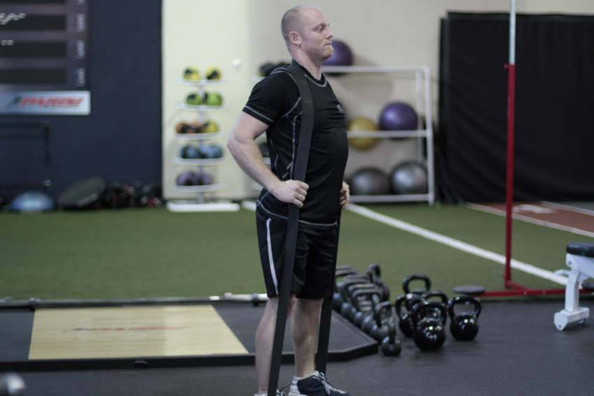

- Using a 41 inch band, stand on one end, spreading your feet a small amount. Bend at the hips to loop the end of the band behind your neck. This will be your starting position.
- Keeping your legs straight, extend through the hips to come to a near vertical position.
- Ensure that you do not round your back as you go down back to the starting position.